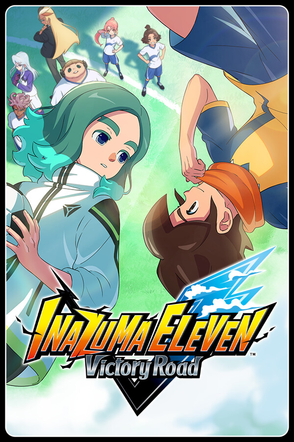

Inazuma Eleven: Victory Road
Every archived year-end list appearance, including placement and points earned.
About the Game
Digital Deluxe EditionThe "INAZUMA ELEVEN: Victory Road Deluxe Edition" is a value package which adds the following bonus content to the base game.■ Package Contents:- Base Game- Choose-a-Character Crate- Bond Object: Football Club Room (Raimon)- Bond Object: Rai Rai Noodles (Inazuma Town)- Promise Pendant (equipment that boosts EXP gained)- Victory Jump! (Goal Celebration)*For more details on the bonuses included with each edition, visit the official website. About the GameO smoldering clouds, let INAZUMA's lightning split the sky!The newest title in the hyperdimensional football RPG series "Inazuma Eleven" is finally here!A new story featuring a new protagonist, over 5,400 characters to collect and train, as well as an intense competitive mode; there is no shortage of activities to enjoy!■ Story ModeThis new story takes place 25 years after the first Inazuma Eleven.In search of a world without football, protagonist Destin Billows enrolls at South Cirrus Junior High. Meanwhile, within the prestigious Raimon Junior High - renowned as the top team in the nationals - rises a Football Monster named Harper Evans.When these two cross paths, a tale begins to unfold...■ Chronicle ModeA roster spanning over 5,400 characters from previous entries in the series!Relive past Inazuma Eleven matches with Victorio, the boy who came from the future.Take on various teams, collect and train characters, and build your ultimate dream team!■ Bond Station (Kizuna Station)Freely arrange nostalgic objects from the Inazuma Eleven series to create your own "Bond Town"!Customize your avatar, invite friends over and enjoy socializing and playing matches together!Your custom made avatar can also be used in matches!■ The Ultimate Anime Experience Brought to Life by MAPPAIn-game anime cutscenes were made in cooperation with animation studio MAPPA!With the longest anime runtime in the series' history, the story's intensity will reach new heights.
| Released | 2025-11-13 |
|---|---|
| Developer | level5 |
| Publisher | LEVEL5 |
| Genres | RPG, Sports |
| Platforms | PC |
SingleplayerSteam AchievementsMultiplayerFull controller supportSteam CloudRPGStory RichTacticalPvPAnimeCross-Platform MultiplayerCharacter Customization
Where to Buy
Game information provided by RAWG.
Points by Year
List History
| Year | Source | List | Placement | Points |
|---|---|---|---|---|
| 2025 | NPR | The best games of 2025, picked by NPR's staff | Unranked | 1 |